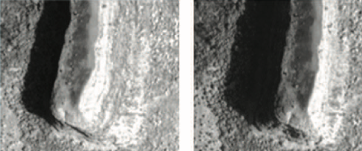
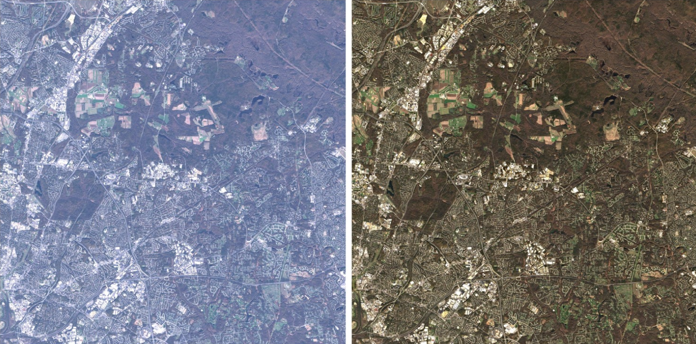
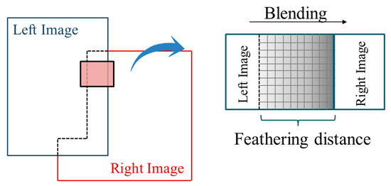

3 Image Correction & Data Joining
3.1 Summary
This week, we discussed the pre-processing steps that allow us to turn raw remotely sensed data into a product which we can use for analysis. The processing requirements we described fell into two categories which will be detailed below.
3.1.1 Corrections
A number of types of distortions can occur which can alter where artefacts on the ground are placed in relation to each other or how radiation measured at the satellite differs from conditions at the surface. The main subcategories of distortions and primary methods to correct for them are briefly described here:
Geometric Correction: The viewing angle of a satellite to the point on Earth’s surface being photographed can cause distortions in the resulting images, arising from inconsistent perspectives. Ideally, a satellite will be at the local zenith (directly above) of the point on Earth being imaged, but this is not always the case. Correcting for this specific type of distortion is known as orthorectification, where images are corrected to appear as if they were taken from nadir (straight down).


Similar distortions can occur as a result of the Earth’s topography or from the rotation of the earth moving the ground underneath the satellite as it orbits.
To apply a geometric correction, reference points (called ground control points) are matched between the collected image and a ‘ground truth’ dataset of the surface. From there, a linear regression model is generated and a geometric transformation applied to each point in the image.
Atmospheric Correction: Interference from Earth’s atmosphere such as cloud cover atmospheric scattering, can cause radiation reflected from Earth’s surface to be distorted or obscured entirely. Atmospheric corrections can be either relative, in that they normalise pixels relative to other points in the image (e.g. a regression based on pseudo-invariant features, points which are likely to be consistent in their reflective properties), or absolute where atmospheric models are used to correct for specific atmospheric conditions.

Radiometric Calibration: Although not image ‘correction’, radiometric calibration refers to converting the brightness of specific pixels (stored as a unitless digital number by the satellite) into radiance, which is a specific measure of radiative intensity.
Fortunately for professionals (or hobbyists) using remote sensing imagery, level two products can be downloaded for most sensor platforms. A level two product refers to data that has already been pre-processed to correct for many of the distortions described
3.1.2 Data Joining
Because remote sensing data is collected and provided as sets of discrete images, it becomes important to join adjacent images together if an area of study falls across that boundary. Typically, remotely sensed images are feathered together, meaning a slight area of overlap is blended together to enable a seamless-looking transition, even between temporally distinct images. Typically, brightness values are normalised across the two images before this feathering occurs.

There are a number of other image enhancements one can do, including normalising brightness across bands or ‘stretching’ data across the entire range of digital numbers for a particular sensor to improve contrast. In the interest of brevity, I will omit a more detailed description here.
3.2 Applications in Research
Much of the processing described above is often more of a prerequisite to remote sensing work than the primary focus. With that said, a particular paper of interest I found used geometric distortions not as an image collection error to be corrected but as an additional source of data that adds height data to image collections of Atlanta, Georgia. (Longbotham et al. 2012). By creating what they refer to as a ‘multiangle image sequence’ of Atlanta Georgia using the WorldView-2 imaging satellite height data can be derived from these multi-image datasets, where only synthetic aperture radar (SAR) or LIDAR sensors have typically been used. From this, they used this height data to improve urban classification of the city by 27%.
Another paper I found interesting, Fusion based Seamless Mosaic for Remote Sensing Images, concerns the process of mosaicking, or stitching remotely sensed images together. In class we discussed the basic method of ‘feathering’ images together, whereby the region overlapped by the two images is converted into a weighted average of the two (with weights depending on which image each pixel is closer to). This paper proposes a method whereby images are decomposed into low-frequency and high-frequency components and processed independently. (Lu, Li, and Fu 2014) For low-frequency parts of images, which are smooth and continuous in nature, the aforementioned feathering effect is used. With that said, high-frequency components such as edges are preserved using a seam-stitching method that enables important structures to be best maintained while enabling smooth transitions of other features between each image.
3.3 Reflection
Pulling the curtain back, so to speak, on image processing was an enlightening process because my entire experience with remote sensing to date has dealt with pre-processed products that allowed me, as the end user, to bypass any concerns related to image collection entirely. It’s easy to conceptualise remotely sensed images as perfect and uninterrupted when Earth Engine is the window through which all of this data is viewed. Learning that atmospheric models are used to correct for specific distortions or how complex (and computationally expensive) some methods of mosaicking images can be gives me a greater appreciation for the power of the technology we’re applying when we use Landsat, Sentinel, or other EO data. Although I don’t see myself doing any work on image correction tools in the future, I think the context is critical.